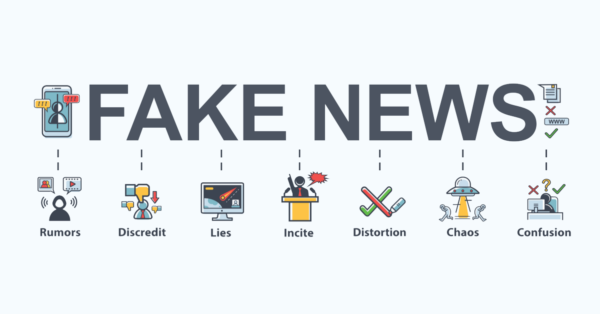

In this day and age, social media dominates almost every aspect of people's lives. They communicate with friends through it, share their actions throughout the day, and use it as a source of entertainment. However, social media is also used as a news outlet by millions of people everyday. This can be a good thing because it gets people news almost instantaneously and makes it easily accessible. What makes trusting these news reports difficult is that the source is not always reliable. Anyone can say whatever they want on social media, and if people choose to believe them lies can be spread across the internet.
One recent example of false news being spread through Social Media is a fake quote that was supposedly said by Donald Trump to People Magazine in 1998. Trump supposedly told People Magazine, “If I were to run, I’d run as a Republican. They’re the dumbest group of voters in the country. They believe anything on Fox News. I could lie and they’d still eat it up. I bet my numbers would be terrific.” However, there was never even an interview conducted by People Magazine with Donald Trump in 1998, and he most definitely never said that. On Twitter, this quote along with a picture of Donald Trump was retweeted over 906 thousand times.
